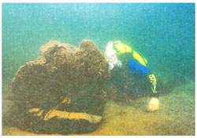
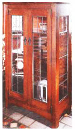
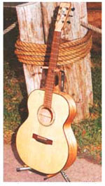

BITS & PIECES
Centuries-old logs harvested from Great Lake bed.
In the closing decades of the nineteenth century, an army of loggers labored beneath the seemingly endless canopy of the white pine forests that stretched from Wisconsin to Canada, harvesting the virgin hardwoods that grew beneath the cool protective shade of the pines.
The old-growth trees of those far-reaching Northeast lands are forever gone-or are they? Several years ago, Scott Mitchen, cofounder along with Robert "Buz" Holland of the Superior Water-Logged Lumber Co., Inc., based in Ashland, Wisconsin, discovered that hundreds of thousands-if not millions-of logs lie preserved on the bed of Lake Superior, remnants of logging operations that stretch back over 300 years. Transported in chain-boomed rafts to sawmills, 20% to 30% of the timber became water-logged and fell to the lake bed, where it is destined to remain. That is, until treasure hunter and shipwreck salvager Scott Mitchen and his team of divers get hold of it. "This," says Mitchen, "is the biggest treasure we've ever found."
Mitchen, who has described the lost logs as the "Jurassic Park of wood," is harvesting red oak, flaming red birch, maple, cherry, elm, walnut, and more all of which have slumbered for centuries in the cold silences of the Great Lake.
Lake Superior, the world's largest body of fresh water, proved to be the best possible resting place for the lost timber, some of which sank below its thick glassy surface before the United States of America existed. The low temperatures and oxygen content of the lake preserved the logs, some nearly 700 years old, embalming them like mummies from a lost civilization.
Because these mummified logs once grew under a canopy of conifers in low light and limited-nutrient conditions, they matured slower than the fast-growing varieties modem tree farms now use. The result is a superfine grain, with 25 to 70 growth rings an inch (the highest count yet is 77 rings an inch). This compares to an average of six to 15 growth rings an inch in today's harvested trees. "The growth rings are so tight, they're like pages in a book," says Mitchen.
Superior Water-Logged is using the salvaged wood to build furniture, handicrafts, and musical instruments. Marketed under the trademark Timeless Timber, many of these items are crafted by locals in the Ashland area. One can purchase a walking stick made from a century-old hard maple for $135, wood carvings starting at $140, or a handcarved decoy for $1,500. The furniture, much of it built in the mission or Arts & Crafts style, costs from a few hundred dollars to several thousand.
The furniture is assembled with old-fashioned woodworking techniques, such as pegs in place of nails, and pinned mortise and tenon joinery. Craftsmen who use the wood first had to rediscover and learn these largely antiquated methods. "We had to teach ourselves," says Gregory M. Leick, chief executive officer of Leick Furniture, based in Sheboygan, Wisconsin, which makes furniture from the logs. "Because this wood is so special, it deserved the best treatment we could muster."
Leick Furniture uses the wood for such items as its red oak Ashland -Curio Cabinet, which costs $2,500, as well as for red oak clocks, which retail from $100 to $750.
One of the traditional techniques Leick Furniture uses to improve the quality of the products built from the wood is the quartersawn method. The modern technique for cutting slabs of wood is the flatsawn method, in which flat slices are cut from a log like slicing a carrot. The quartersawn method, however, cuts the log into four sections, like a pie. This, Leick says, exposes ray-flakes, which enhances the appearance of the wood, giving it a traditional Arts & Crafts look. "The yield isn't as good," Leick says, "but it makes more stable wood because the rays bind across the grain."
Dave Johns, a local Ashland craftsman, makes furniture and crafts from the wood, ranging from a dining room table made from bird's-eye maple to a flaming red-birch softball bat made as a trophy for a little-league softball team. "The wood is totally different than anything I've worked with," says Johns, who praises the wood for its hardness and the crisp clear lines it holds when shaving and routing. "There's a limited supply," says Johns, "that's what makes it special."
Others seem to agree. Microsoft mogul Bill Gates used paneling made from the old wood in the library of his mansion. Other notable sites that have incorporated the wood are the Boeing Building in Seattle and the Saddledome, home of the Calgary Flames hockey team. "We've got architects who are salivating over this wood," says Mitchen.
The wood is also ideal for musical instruments. In fact, the logs now being harvested from the bottom of Lake Superior may one day produce some of the finest instruments in the world. The water of the lake chemically altered the fibers of the logs, giving the wood an added resonance for musical instruments. Changes have occurred at the cellular level of the fibers, as anaerobic bacteria in the water ate away certain starchy substances that dampen acoustic vibrations.
Dr. Joseph Nagyvary of the Department of Biochemistry at Texas A&M University, who has researched Superior Water-Logged's wood, believes Antonio Stradivari may have soaked his violins in water, possibly for over 20 years. "When we look at the infrared spectrum, we find this wood from Lake Superior is very similar to that used in a cello by Antonio Stradivari," says Nagyvary. The company is now gathering the wood to make its first violin, traditionally made from maple and spruce. In the meantime, to prove its faith in the product, the company gave country singer Johnny Cash a flat-topped acoustic guitar, handcrafted from a 500-year-old red birch by Chris Hinton, a guitar builder who works for Superior Water-Logged. It will, however, take a lot of diving and a few lucky harvests to compete with the Stradivarius, since, as Hinton notes, only about one in 1,000 of the logs meet the size, weight, and grain pattern required for such world-class violins.
While the prospects for Superior Water-Logged seem promising, the company has recently come upon hard times. Last season, the lumber company salvaged only about 800 logs, and less than 100 of the more valuable hardwoods. They had hoped to salvage 30,000 logs. David Neitzke, president of the company, was hired in late 1997, after the prediction was made. He says that estimate was unrealistic and didn't take into account the bureaucratic obstacles the company would (and continues to) face. Still, he asserts, Superior Water-Logged is in it for the long haul.
Mitchen blames the poor harvest on government red tape and the lack of permits grunted by state regulators. "We are literally at the mercy of government regulation, both state and federal," Mitchen says. It may be necessary red tape, however. The company has to apply to the state for each 40-acre area from which it plans to harvest sunken logs. The requested area is then researched by a number of state and federal agencies, including the U.S. Fish and Wildlife Service, the Commissioner of Public Lands, the Department of Natural Resources, and the State Historical Society, all of whom make sure the site isn't home to any endangered species or possible historic landmarks, such as sunken vessels.
To make things worse, after the company started showing financially promising results, a swarm of other prospective old-log harvesters came out of the woodwork. "We had a gold rush--type situation on the permits," says Mitchen. "It put a scare in everybody that the whole bottom [of the lake] would be ripped up." The less serious prospectors have largely retreated, however, leaving Superior Water-Logged one of the few remaining underwater logging operations in the area.
Yet the furniture "is selling great," says Leick. "The biggest problem is getting enough wood''
Mitchen remains optimistic. "We're talking billions of board feet of wood," he says, predicting the company will harvest one- to two-million board feet this season alone. (There are about 150 board feet per log.) The company sells the wood for $2.38 to $11.60 a board foot.
The idea just seems too good to die. "You've got the romance," says Mitchen of the logs and furniture, a treasure from the past that becomes a treasure for the future. Mtchen, whose grandfather was a logger, is a romantic when it comes to his company's purpose, which he says isn't purely materialistic. Recalling that many loggers lost their lives chopping down and transporting the timber, Mitchen says that, in his mind's eye, he sees his grandfather gazing down from heaven-as each lost log rises to the water's surface from the muddy bottom of the lake-smiling, and saying, "Our efforts weren't in vain."
You can learn more about Superior Water-Logged by writing them at 2200 East Lake Shore Drive, Ashland, WI 54806 or by calling (715) 685- WOOD.
|
Scott Mitchen on the floor of Lake Superior |
An Ashland Curio Cabinet made of Timeless Timber quartersawn red oak by Leick Furniture in Sheboya, Wisconsin |
 Craftsmen appreciate the wood's superfine grain. |
|
A guitar crafted from flame birch. |
|
 |
|
|
 |
|